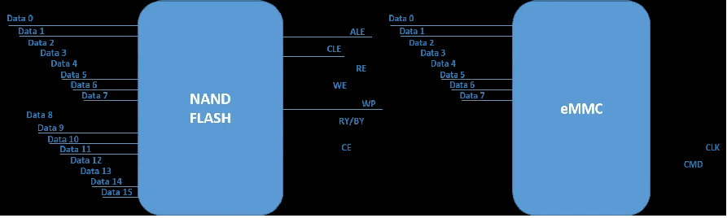
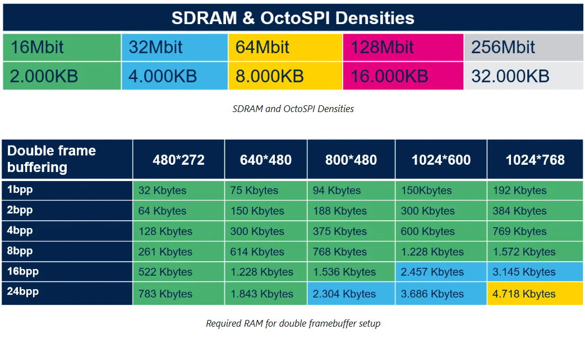
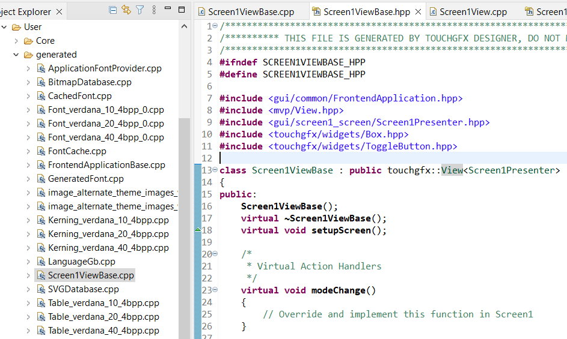

TouchGFX Frame Buffer Size
display width * display height * (bits per pixel / 8) As an example, an 800x480 application with a color depth of 16bpp and a single framebuffer would need a framebuffer allocated with a size of:
800 * 480 * (16 / 8) = 768,000 bytes (768,000/1024 = 750Kbytes) Graphic Subsystem Frequency
An example of assessing the theoretical core and subsystem performance when running from internal RAM on an STM32H7 can be seen next: The CPU core is running at 480MHz.
The 64-bit AXI bus frequency at 240MHz.
The LCD-TFT display controller (LTDC) uses the 64-bit AXI bus, and does 8 transfers in 10 cycles.
The internal RAM poses no significant latency, i.e. 0 wait states.
The bandwidth of the internal RAM when accessed by the LTDC peripheral is then:
Bandwidth = 240 MHz x 8/10 x 8 bytes = 1,536Mbytes/s. With such bandwidth, the internal RAM can ensure 1000 frames per second (fps) for 800x480 resolution at 32bpp color depth. Typically one would limit the transfer to the display (by adjusting pixel clock, porches, ...) to 60 frames per second, so the bandwidth of the LTDC and internal RAM is not a bottleneck.
In addition, the capability to convert from YCbCr format to RGB format is added with STM32H7 products to the Chrom-ART peripheral. This feature, combined with the JPEG hardware codec can offload the CPU when encoding and decoding JPEG images.
Refer to AN4943 application note for more information: Chrom-ART Hardware acceleration pdf
Refer to AN4996 application note for more information: Hardware JPEG codec pdf
Refer to AN4839 application note for more information: Level 1 Cache pdf
Display Memory
hardware-selection-display hardware-selection-external-memories#nor-flash
Different Memory Interfaces With STM32:


selection-of-external-ram-density

board-introduction#overall-process
01-create-project
02-cpu-running
03-display-internal
TouchGFX Youtube Video
STM32CubeIDE 1.2.1 and TouchGFX 4.13.0 with STM32F746G-DISC0 kit This video Getting Started with TOUCH GFX || LED CONTROL using BUTTON is based on
In the test TouchGFX designer project I created a toggle button and OnClick event a function
modeChange is assigned. After code generation
this will be a virtual function defined in Screen1ViewBase.hpp and called in Screen1ViewBase.cpp -> void Screen1ViewBase::buttonCallbackHandler(const touchgfx::AbstractButton& src) .
 Observe that we should not modify code files under generated folder.
Rather we have to change the codes under gui folder.
To toggle a LED check the GPIO Pin for the LED in CubeMX view.
In my case for STM32F746G-DISC0 board, There is a LED on board with Pin PG6 . In the generated code it is called
HAL_GPIO_Init(MCU_ACTIVE_GPIO_Port, &GPIO_InitStruct); Add this
virtual void modeChange(); to Now implement the function in Screen1View.cpp as below:
void Screen1View::modeChange()
{
if(tglBtnA.getState())
{
HAL_GPIO_WritePin(GPIOG, GPIO_PIN_6, GPIO_PIN_SET);
}
else
{
HAL_GPIO_WritePin(GPIOG, GPIO_PIN_6, GPIO_PIN_RESET);
}
}
TOUCH GFX #2. Counter || Text Area || Wildcards
Just drop the image in the location like
C:\TouchGFXProjects\AirmanV0_1\TouchGFX\assets\images folder. It will be appeared in the designer.